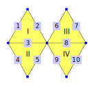
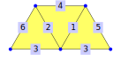
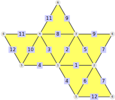
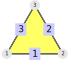
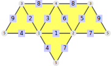

This chapter is concerned with the modification of polygonal complexes (introduced in chapter 2 as a generalization of simplicial surfaces). This allows the construction of new complexes from old ones.
This chapter covers the operations of splitting (12.1) and joining (12.4) a polygonal complex along vertices or edges (more generally along a vertex-edge-path, which was introduced in section 8.1).
The aim of these operations is to provide a set of tools that allows a user to develop their own modifications without worrying too much about the underlying incidence structure. To make this easier, section 12.5 contains several useful modifications, along with an explanation how they can be constructed with the elementary tools.
This section contains the basic functionality for splitting polygonal complexes along edges (12.1-1) and vertices (12.1-2). More generally, it also provides methods to split along vertex-edge-paths (12.1-3 and 12.1-4).
After splitting one element into several elements the label of the old element is replaced by new labels. The splitting methods always return the new labels to make further modification easier.
This will be illustrated on a hexagon.
gap> hex := SimplicialSurfaceByDownwardIncidence( > [ [1,7],[2,7],[3,7],[4,7],[5,7],[6,7],[1,2],[2,3],[3,4],[4,5],[5,6],[1,6] ], > [ [1,2,7],[2,3,8],[3,4,9],[4,5,10],[5,6,11],[1,6,12] ]);;
For example it is possible to split the inner edge 1 into two boundary edges 13 and 14 by SplitEdge (12.1-1).
gap> edgeSplit := SplitEdge(hex, 1);; gap> edgeSplit[2]; [ 13, 14 ]
Conversely, trying to split a boundary edge, like 7, would have made no difference:
gap> boundSplit := SplitEdge(hex, 7);; gap> boundSplit[1] = hex; true
After the edge split the vertex 1 has two umbrellas (compare 3.4-2 for details). These can be split up by SplitVertex (12.1-2).
gap> vertSplit := SplitVertex( edgeSplit[1], 1 );; gap> vertSplit[2]; [ 8, 9 ]

These two splitting operations can also be combined by using a vertex-edge-path (introduced in section 8.1). For example, to cut through the edges 1 and 4 of the hexagon (along with the incident vertices), we can use SplitVertexEdgePath (12.1-3).
The splitting path can be given in multiple ways: via vertices, via edges or by giving an alternating list of both.
gap> cutPath := VertexEdgePath(hex, [4,4,7,1,1]); | v4, E4, v7, E1, v1 | gap> VertexEdgePathByVertices(hex, [4,7,1]); | v4, E4, v7, E1, v1 | gap> VertexEdgePathByEdges(hex, [4,1]); | v4, E4, v7, E1, v1 |
gap> hexCut := SplitVertexEdgePath( hex, cutPath );; gap> NumberOfConnectedComponents(hexCut[1]); 2
If instead only the central vertex should be split (such that the edge split "opens" the surface), the method SplitEdgePath (12.1-4) can be used instead.
gap> hexOpen := SplitEdgePath( hex, cutPath );; gap> NumberOfConnectedComponents(hexOpen[1]); 1

‣ SplitEdge( complex, edge[, newEdgeLabels] ) | ( operation ) |
‣ SplitEdgeNC( complex, edge[, newEdgeLabels] ) | ( operation ) |
Returns: a pair, where the first entry is a polygonal complex and the second entry is a set of the new edge labels.
Split the given edge in the polygonal complex complex into as many edges as there are faces incident to edge. If there was only one incident face (i.e. the edge is a boundary edge (9.4-3)) then no labels are changed. Otherwise the old edge label is no longer used and will be replaced by the appropriate number of new labels. The new labels can be defined by the optional argument newEdgeLabels. Let numFaces be the number of incident faces from edge, i.e. the number of new edges. By default, the list newEdgeLabels is the list [1..numFaces], which is shifted by the maximal edge label in each entry.
For example consider the following triangular complex:
gap> closeEye:=SimplicialSurfaceByDownwardIncidence( > [[1,2],[1,3],[2,3],[3,4],[1,4]],[[1,2,3],[2,4,5]]); simplicial surface (4 vertices, 5 edges, and 2 faces) gap> eye:=SplitEdge(closeEye,2); [ triangular complex (4 vertices, 6 edges, and 2 faces), [ 6, 7 ] ]
[ 6, 7 ] are the new edge labels, because the new edge labels are not given and edge 2 is incident to two faces and the maximal edge label is 5.
The NC-version does not check whether edge is an actual edge of complex and whether the new edge labels are actually available.
‣ SplitVertex( complex, vertex[, newVertexLabels] ) | ( operation ) |
‣ SplitVertexNC( complex, vertex[, newVertexLabels] ) | ( operation ) |
Returns: a pair, where the first entry is a polygonal complex and the second entry is a set of the new vertex labels.
Split the given vertex in the polygonal complex complex into as many vertices as necessary such that the incident faces of the new vertices are connected via the incident edges of these vertices.
For a polygonal surface this corresponds to adding one vertex for each element of the umbrella partition (3.4-2) of vertex.
If the vertex does not have to be split according to this rule (i.e. it is an inner (9.5-1) or a boundary (9.5-2) vertex), its label will stay the same. Otherwise the old label will be removed and replaced by new labels. The new labels can be defined by the optional argument newVertexLabels. Let numVert be the number of new vertices that are necessary to split vertex. By default, the list newEdgeLabels is the list [1..numVert], which is shifted by the maximal vertex label in each entry.
For example consider the following triangular complex: 
gap> ramSurf := PolygonalComplexByDownwardIncidence( > [ ,,,,,,,,,,,,[6,5],[1,5],[5,7],[6,1],[6,7],[1,7], > [1,8],[1,10],[1,12],[8,10],[10,12] ], > [ , [14,15,18],[13,14,16],[16,17,18],,,,,[19,22,20],,[20,21,23] ]);; gap> splittedComplex:=SplitVertex(ramSurf,1); [ simplicial surface (8 vertices, 11 edges, and 5 faces), [ 13, 14 ] ]
[ 13, 14 ] are the new vertex labels, because new vertex labels are not given and vertex 1 has two elements in the umbrella partition and the maximal vertex label is 12. Splitting the vertex 1 in the complex divides the complex into two components:
gap> NumberOfConnectedComponents(splittedComplex[1]); 2
The NC-version does not check whether vertex is an actual vertex of complex and whether the new vertex labels are actually available.
‣ SplitVertexEdgePath( complex, vePath ) | ( operation ) |
‣ SplitVertexEdgePathNC( complex, vePath ) | ( operation ) |
Returns: a pair, where the first entry is a polygonal complex and the second entry encodes the label changes
Split the given complex along the given vePath. First, all edges of the path are split by SplitEdge (12.1-1), then all vertices of the path are split by SplitVertex (12.1-2). If the first and final vertex of vePath should not be split, the method SplitEdgePath (12.1-4) should be used instead.
This method will change the labels of all affected vertices and edges. All other labels remain unchanged.
The given vePath has to be a duplicate-free (8.1-9) vertex-edge-path (for the definition see 8.1-1) of complex. Vertex-edge-paths can be created easily:
From a list of vertices: VertexEdgePathByVertices (8.1-2)
From a list of edges: VertexEdgePathByEdges (8.1-3)
From a list in which vertices and edges are alternating: VertexEdgePath (8.1-1)
This method returns a pair where the first component is the split complex and the second one contains the changed labels. The second component is a list of pairs [newPath, oldPath]. These are computed as follows: If the original vePath would be marked in the split complex, it would show up as multiple vertex-edge-paths. Each of those is a newPath and the corresponding oldPath is the unique subpath of the original vePath, such that each element of newPath was obtained from the element at the same position in oldPath.
For example consider the following polygonal complex:
gap> complex:=PolygonalComplexByDownwardIncidence([[1,2],[2,3],[1,3],[1,4], > [3,4],[3,5],[5,6],[3,6],[3,7],[6,7]],[[1,2,3],[3,4,5],[6,7,8],[8,9,10]]);;

gap> path:=VertexEdgePathByEdges(complex,[3,8]);;
Splitting the complex along this path leads to four one faces:
gap> split:=SplitVertexEdgePath(complex,path); [ simplicial surface (12 vertices, 12 edges, and 4 faces), [ [ | v12, E13, v14 |, | v3, E8, v6 | ], [ | v13, E14, v15 |, | v3, E8, v6 | ], [ | v8, E11, v10 |, | v1, E3, v3 | ], [ | v9, E12, v11 |, | v1, E3, v3 | ] ] ] gap> NumberOfConnectedComponents(split[1]); 4
The second output shows in which two path the original path was split.
The NC-versions do not check whether the given vertex-edge-paths match the given complex.
‣ SplitEdgePath( complex, vePath ) | ( operation ) |
‣ SplitEdgePathNC( complex, vePath ) | ( operation ) |
Returns: a pair, where the first entry is a polygonal complex and the second entry encodes the label changes
Split the given complex along the given vePath. First, all edges of the path are split by SplitEdge (12.1-1), then all vertices of the path (except first and last) are split by SplitVertex (12.1-2). If the first and final vertex of vePath should also be split, the method SplitVertexEdgePath (12.1-3) should be used instead.
This method will change the labels of all affected vertices and edges. All other labels remain unchanged.
The given vePath has to be a duplicate-free (8.1-9) vertex-edge-path (for the definition see 8.1-1) of complex. Vertex-edge-paths can be created easily:
From a list of vertices: VertexEdgePathByVertices (8.1-2)
From a list of edges: VertexEdgePathByEdges (8.1-3)
From a list in which vertices and edges are alternating: VertexEdgePath (8.1-1)
This method returns a pair where the first component is the split complex and the second one contains the changed labels. The second component is a list of pairs [newPath, oldPath]. These are computed as follows: If the original vePath would be marked in the split complex, it would show up as multiple vertex-edge-paths. Each of those is a newPath and the corresponding oldPath is the unique subpath of the original vePath, such that each element of newPath was obtained from the element at the same position in oldPath.
For example consider the following polygonal complex:
gap> complex:=PolygonalComplexByDownwardIncidence([[1,2],[2,3],[1,3],[1,4], > [3,4],[3,5],[5,6],[3,6],[3,7],[6,7]],[[1,2,3],[3,4,5],[6,7,8],[8,9,10]]);;
gap> path:=VertexEdgePathByEdges(complex,[3,8]);;
Splitting the complex along this path without the first and the last vertex leads to two components:
gap> split:=SplitEdgePath(complex,path); [ triangular complex (10 vertices, 12 edges, and 4 faces), [ [ | v10, E13, v6 |, | v3, E8, v6 | ], [ | v11, E14, v6 |, | v3, E8, v6 | ], [ | v1, E11, v8 |, | v1, E3, v3 | ], [ | v1, E12, v9 |, | v1, E3, v3 | ] ] ] gap> NumberOfConnectedComponents(split[1]); 2
The second output shows in which two path the original path was split.
The NC-versions do not check whether the given vertex-edge-paths match the given complex.
This section contains the functionality to:
remove faces of a polygonal complex
restrict a polygonal complex to a subset of faces
The functions will be illustrated on a hexagon.
gap> hex := SimplicialSurfaceByDownwardIncidence( > [ [1,7],[2,7],[3,7],[4,7],[5,7],[6,7],[1,2],[2,3],[3,4],[4,5],[5,6],[1,6] ], > [ [1,2,7],[2,3,8],[3,4,9],[4,5,10],[5,6,11],[1,6,12] ]);;
For example it is possible to remove the face 1.
gap> removedHex := RemoveFace(hex,1); simplicial surface (7 vertices, 11 edges, and 5 faces)
It is also possible to restrict the hexagon to the faces 2 to 6.
gap> restrictedHex := SubcomplexByFaces(hex,[2,3,4,5,6]); simplicial surface (7 vertices, 11 edges, and 5 faces)
These two surfaces are isomorphic.
gap> IsIsomorphic(removedHex,restrictedHex); true
‣ SubcomplexByFaces( complex, faces ) | ( operation ) |
‣ SubcomplexByFacesNC( complex, faces ) | ( operation ) |
‣ SubsurfaceByFaces( surface, faces ) | ( operation ) |
‣ SubsurfaceByFacesNC( surface, faces ) | ( operation ) |
Returns: a twisted polygonal complex
Return the polygonal complex that is generated by restricting complex to the given set of faces. This will remove all edges and vertices that are not incident to one of the remaining faces.
All labels of remaining vertices, edges and faces will remain the same. The method SubsurfaceByFaces is only applicable to surfaces and guarantees that the returned subcomplex is a surface. If this is not possible fail is returned.
For example consider the hexagon from the start of this chapter:
gap> SubcomplexByFaces(hex,[2,5]); triangular complex (5 vertices, 6 edges, and 2 faces)
The NC-version does not check whether the given set of faces actually consists only of faces in complex. It also does not check whether the result of SubsurfaceByFaces is a surface.
In Chapter 19 the edge colouring of twisted polygonal complexes will be introduced.
The hexagon from above can be coloured as follows:
gap> colEdges:=[ 1, 2, 1, 2, 1, 2, 3, 3, 3, 3, 3, 3 ];; gap> colSurface:=EdgeColouredPolygonalComplex(hex,colEdges); tame coloured surface (MMB with 7 vertices, 12 edges and 6 faces)
If we compute a subcomplex of an edge-coloured complex, it will be edge-coloured again, induced by the edge-colouring of the given complex:
gap> SubsurfaceByFaces(colSurface,[1,2]); tame coloured surface (BMB with 4 vertices, 5 edges and 2 faces)
‣ RemoveFaces( complex, faces ) | ( operation ) |
‣ RemoveFacesNC( complex, faces ) | ( operation ) |
‣ RemoveFace( complex, face ) | ( operation ) |
‣ RemoveFaceNC( complex, face ) | ( operation ) |
Returns: a polygonal complex
Remove the given faces from complex and return the result. If this removal results in vertices or edges that are not incident to any remaining faces, they will be removed as well. The labels of all remaining vertices, edges and faces will remain unaffected.
For example consider the Tetrahedron and remove one face:
gap> tetraRemoved:=RemoveFace(Tetrahedron(),1); simplicial surface (4 vertices, 6 edges, and 3 faces) gap> IsClosedSurface(tetraRemoved); false

The NC-version does not check whether the given set of faces actually consists only of faces in complex.
This section explains the conventions of disjoint unions (12.3-1) of polygonal complexes. While this might seem trivial at first, its behaviour has to be stated clearly and unambiguously, since all of the joining modifications of section 12.4 are based on it.
To illustrate this, consider the tetrahedron.
gap> tetra := Tetrahedron();;
Both of these tetrahedra have the same labels for vertices, edges and faces.
gap> Vertices(tetra); [ 1, 2, 3, 4 ] gap> Edges(tetra); [ 1, 2, 3, 4, 5, 6 ] gap> Faces(tetra); [ 1 .. 4 ]
A disjoint union can't just combine these labels because it would not be clear to which component the vertex 2 is belonging. This conflict of labels is a common occurrence and has to be handled delicately.
The SimplicialSurface-package deals with this problem by uniformly shifting the labels of the second argument.
gap> disjoint := DisjointUnion(tetra, tetra);; gap> Vertices( disjoint[1] ); [ 1, 2, 3, 4, 7, 8, 9, 10 ] gap> Edges( disjoint[1] ); [ 1, 2, 3, 4, 5, 6, 7, 8, 9, 10, 11, 12 ] gap> Faces( disjoint[1] ); [ 1, 2, 3, 4, 7, 8, 9, 10 ]
Notably all labels of the second tetrahedron were shifted by the same amount. More precisely they are shifted by the highest label of the first tetrahedron - which is the edge label 6.
To be able to use this information in further calculations, the used shift is returned as well.
gap> disjoint[2]; 6
‣ DisjointUnion( complex1, complex2[, shift] ) | ( operation ) |
Returns: a pair, where the first entry is a polygonal complex and the second entry is the used shift
Return the disjoint union of the given two polygonal complexes. In this process the labels of the second complex usually are shifted. The default shift is determined by this procedure:
If the labels of vertices, edges and faces do not overlap, the second labels do not need to be shifted. The default shift is 0.
Otherwise the labels of the second complex are shifted by the highest label of the first complex - which may be the label of a vertex, an edge or a face.
If the optional shift is higher than the default shift, it will be used instead. Otherwise it will be ignored.
All labels of the second complex are shifted upwards by the same amount, even if it would not be necessary to shift all of them that much to make the labels disjoint.
For example also the disjoint union of two different complexes can be build:
gap> oneFace:=SimplicialSurfaceByDownwardIncidence( > [[1,2],[2,3],[1,3]],[[1,2,3]]);; gap> DisjointUnion(oneFace, JanusHead()); [ simplicial surface (6 vertices, 6 edges, and 3 faces), 3 ]
This section contains the basic functionality for joining polygonal complexes along vertices and edges and more generally along vertex-edge-paths (for their definition, compare 8.1-1). More specifically the following operations are supported:
Identifying two vertices (12.4-1)
Identifying two edges (12.4-2)
Identifying two vertex-edge-paths (12.4-4)
Identifying the perimeters of two boundaries/holes (12.4-5)
For example conisder the following complex:
gap> complex:=SimplicialSurfaceByDownwardIncidence( > [,[2,7],[3,7],[4,7],[5,7],[6,7],[2,8],[2,3],[3,4], > [4,5],[5,6],[6,9],[7,8],[7,9]], > [[2,7,13],[2,3,8],[3,4,9],[4,5,10],[5,6,11],[6,12,14]]);;
It is possible to join the vertices 8 and 9 and the new vertex will get the label 1.
gap> vertJoin:=JoinVertices(complex,[8,9],1);; gap> vertJoin[2]; 1
After this vertex join the edges 13 and 14 can be join to a new edge with label 1.
gap> edgeJoin:=JoinEdges(vertJoin[1],13,14,1);; gap> edgeJoin[2]; 1
These two joining operations can also be combined by using a vertex-edge-path (introduced in section 8.1). Consider the following complex:
gap> hexOpen:=SimplicialSurfaceByDownwardIncidence( > [,[2,12],[3,12],,[5,13],[6,13],[2,8],[2,3],[3,10],[5,11], > [5,6],[6,9],[8,12],[9,13],[10,12],[11,13]], > [[2,7,13],[2,3,8],[3,9,15],[5,10,16],[5,6,11],[6,12,14]]);;
The two joining paths can be given in multiple ways: via vertices, via edges or by giving an alternating list of both.
gap> path1:=VertexEdgePath(hexOpen,[10,15,12,13,8]); | v10, E15, v12, E13, v8 | gap> VertexEdgePathByVertices(hexOpen,[10,12,8]); | v10, E15, v12, E13, v8 | gap> VertexEdgePathByEdges(hexOpen,[15,13]); | v10, E15, v12, E13, v8 | gap> path2:=VertexEdgePath(hexOpen,[11,16,13,14,9]); | v11, E16, v13, E14, v9 | gap> VertexEdgePathByVertices(hexOpen,[11,13,9]); | v11, E16, v13, E14, v9 | gap> VertexEdgePathByEdges(hexOpen,[16,14]); | v11, E16, v13, E14, v9 | gap> hex:=JoinVertexEdgePaths(hexOpen,path1,path2);; gap> NumberOfConnectedComponents(hex[1]); 1
‣ JoinVertices( complex, v1, v2[, newVertexLabel] ) | ( operation ) |
‣ JoinVerticesNC( complex, v1, v2[, newVertexLabel] ) | ( operation ) |
‣ JoinVertices( complex, vertexList[, newVertexLabel] ) | ( operation ) |
‣ JoinVerticesNC( complex, vertexList[, newVertexLabel] ) | ( operation ) |
‣ JoinVertices( complex1, v1, complex2, v2 ) | ( operation ) |
‣ JoinVerticesNC( complex1, v1, complex2, v2 ) | ( operation ) |
Returns: a list, where the first entry is a polygonal complex, the second one is the new vertex label and the third is the shift for the labels of the second input complex2 (only if applicable).
Combine two vertices into one. This method comes in two flavors:
Combine two vertices v1 and v2 of a single polygonal complex complex into one. This will return fail if the vertices are incident to a common face.
The optional argument newVertexLabel allows to set the label of the new vertex. By default, newVertexLabel is one higher than the maximal vertex label unless the vertices to be joined are equal or the length of vertexList is one. In these cases the label does not change.
Combine two vertices v1 and v2 of two distinct polygonal complexes complex1 and complex2. This will perform DisjointUnion (12.3-1) on the two complexes to reduce this problem to the first case.
Both methods return a list, where the first entry is the new polygonal complex, the second entry is the label of the new vertex and (only in the second case) the third entry is the used shift of the disjoint union (refer to section 12.3 for details).
To illustrate the first case, consider the octahedron.
gap> octa := Octahedron();;

It is possible to join vertices on opposite sides, for example 1 and 6.
gap> octJoin := JoinVertices(octa, 1, 6);; gap> octJoin = fail; false
This combines the vertices 1 and 6 into a new vertex with label 7, which becomes a ramified vertex (9.5-3).
gap> octJoin[2]; 7 gap> Vertices(octJoin[1]); [ 2, 3, 4, 5, 7 ] gap> RamifiedVertices(octJoin[1]); [ 7 ]
On the other hand, it is not possible to join two vertices if they are connected by an edge.
gap> JoinVertices(octa, [2,3]); fail
To illustrate the second case, consider the following two simplicial surfaces:
gap> leftWing := SimplicialSurfaceByVerticesInFaces( [[1,2,3],[2,3,4],,[3,4,5]] );;
gap> rightWing := SimplicialSurfaceByVerticesInFaces( [[1,2,3],[2,3,4]] );;
If these two surfaces are joined along the vertices 3 (of the left wing) and 2 (of the right wing), the labels of the second one have to be shifted.
gap> butterfly := JoinVertices(leftWing, 3, rightWing, 2);; gap> butterfly[3]; 7
gap> butterfly[2]; 12
The NC-versions don't check whether the given vertices are distinct vertices of the corresponding complexes and whether the newVertexLabel is available.
‣ JoinEdges( complex, e1, e2[, newEdgeLabel] ) | ( operation ) |
‣ JoinEdgesNC( complex, e1, e2[, newEdgeLabel] ) | ( operation ) |
‣ JoinEdges( complex, edgeList[, newEdgeLabel] ) | ( operation ) |
‣ JoinEdgesNC( complex, edgeList[, newEdgeLabel] ) | ( operation ) |
Returns: a pair, where the first entry is a polygonal complex and the second one is the new edge label
Combine two edges e1 and e2 of a polygonal complex into one edge, whose new label can be given by the optional argument newEdgeLabel. By default, newEdgeLabel is one higher than the maximal edge label unless the edges to be joined are equal or the length of edgeList is one. In these cases the label does not change. The edges have to have had the same incident vertices.
This method returns a pair, where the first entry is the modified polygonal complex and the second entry is the label of the new edge.
For example consider the following triangular complex without edge ramifications:
gap> eye := TriangularComplexByDownwardIncidence( > [[1,2],[2,3],[1,3],[2,4],[3,4],[2,3]], [[1,2,3],[4,5,6]]);;
The only edges that can be joined are those with equal incident vertices. These can be found by EdgeAnomalyClasses (17.1-2).
gap> EdgeAnomalyClasses(eye); [ [ 1 ], [ 2, 6 ], [ 3 ], [ 4 ], [ 5 ] ]
The only pair of edges with the same incident vertices are 2 and 6.
gap> closeEye := JoinEdges( eye, 2, 6 );; gap> closeEye[2]; 7
Since 6 is the maximal edge label, 7 is the label of the new edge.
gap> EdgeAnomalyClasses(closeEye[1]); [ [ 1 ], [ 3 ], [ 4 ], [ 5 ], [ 7 ] ]
The NC-versions do not check whether the given edges are distinct edges with the same incident vertices of complex and whether the new edge label is actually valid.
‣ JoinFaces( complex, F1, F2[, newFaceLabel] ) | ( operation ) |
‣ JoinFacesNC( complex, F1, F2[, newFaceLabel] ) | ( operation ) |
‣ JoinFaces( complex, faceList[, newFaceLabel] ) | ( operation ) |
‣ JoinFacesNC( complex, faceList[, newFaceLabel] ) | ( operation ) |
Returns: a pair, where the first entry is a polygonal complex and the second one is the new face label
Combine two faces F1 and F2 of a polygonal complex into one face, whose new label can be given by the optional argument newFaceLabel. By default, newFaceLabel is one higher than the maximal face label unless the faces to be joined are equal or the length of faceList is one. In these cases the label does not change. The faces have to have had the same incident edges.
This method returns a pair, where the first entry is the modified polygonal complex and the second entry is the label of the new face.
For example consider the Janus-head. The two faces have equal incident edges so they can be joined: 
gap> JoinFaces(JanusHead(),1,2,1); [ simplicial surface (3 vertices, 3 edges, and 1 faces), 1 ]
The resulting surface is the one-face. Since 1 is the optional argument newFaceLabel, 1 is the label of the new face.

The NC-versions do not check whether the given faces are distinct faces with the same incident edges of complex and whether the new face label is actually valid.
‣ JoinVertexEdgePaths( complex, vePath1, vePath2 ) | ( operation ) |
‣ JoinVertexEdgePathsNC( complex, vePath1, vePath2 ) | ( operation ) |
‣ JoinVertexEdgePaths( complex1, vePath1, complex2, vePath2 ) | ( operation ) |
‣ JoinVertexEdgePathsNC( complex1, vePath1, complex2, vePath2 ) | ( operation ) |
Returns: a pair, where the first entry is a polygonal complex and the second entry is a vertex-edge-path. The optional third entry describes the label shift of complex2 (if applicable).
Combine two duplicate-free (8.1-9) vertex-edge-paths (8.1-1) of equal length into one. This is done by first joining the corresponding vertices by JoinVertices (12.4-1) and then identifying the corresponding edges with JoinEdges (12.4-2). If two polygonal complexes are given, they are combined with DisjointUnion (12.3-1) before these identifications take place.
If some of the vertices can't be identified because they are incident to the same edge, fail is returned. Otherwise this method returns a pair, where the first entry is a polygonal complex and the second one is the vertex-edge-path in the new polygonal complex that was generated by the identified vertex-edge-paths.
One thing that can be done is the construction of a ramified edge. Consider just one triangle:
gap> triangle := SimplicialSurfaceByDownwardIncidence( > [[1,2],[1,3],[2,3]],[[1,2,3]] );;
First we combine two of them, which leads to a butterfly:
gap> joinPath := VertexEdgePathByVertices(triangle, [1,2]); | v1, E1, v2 | gap> join := JoinVertexEdgePaths(triangle, joinPath, triangle, joinPath);; gap> join[2]; | v7, E7, v8 |
Along this vertex-edge-path another of the triangles can be added:
gap> tripleJoin := JoinVertexEdgePaths(join[1],join[2],triangle,joinPath);; gap> tripleJoin[2]; | v12, E12, v13 | gap> RamifiedEdges(tripleJoin[1]); [ 12 ]
The resulting surface is:
The NC-versions do not check whether the given vertex-edge-paths are actually vertex-edge-paths of the polygonal complexes.
‣ JoinBoundaries( surface, veList1, veList2[, length] ) | ( operation ) |
‣ JoinBoundariesNC( surface, veList1, veList2[, length] ) | ( operation ) |
‣ JoinBoundaries( surface1, veList1, surface2, veList2[, length] ) | ( operation ) |
‣ JoinBoundariesNC( surface1, veList1, surface2, veList2[, length] ) | ( operation ) |
Returns: a list, where the first entry is a polygonal surface, the second one is a vertex-edge-path and the third one is the label shift of complex2 (if applicable).
Combine two boundaries into one. This method takes the starts of two vertex-edge-paths (8.1-1) and extends those into vertex-edge-paths along the boundary of the given polygonal surfaces. Then the method JoinVertexEdgePaths (12.4-4) will be called on these vertex-edge-paths or if a length is given it will be called for possibly truncated vertex-edge-paths.
If two surfaces should be combined, DisjointUnion (12.3-1) will be called beforehand.
Currently the veList has to be given as a list [vertex, edge].
For example, consider the following simplicial surface: 
gap> fourGon := SimplicialSurfaceByDownwardIncidence( > [[1,2],[1,3],[1,4],[1,5],[2,3],[3,4],[4,5],[2,5]], > [[1,2,5],[2,3,6],[3,4,7],[1,4,8]] );;
Combining two of these along their boundaries gives the octahedron.
gap> oct := JoinBoundaries(fourGon, [3,6], fourGon, [4,7]);; gap> IsIsomorphic(oct[1], Octahedron()); true gap> octLength := JoinBoundaries(fourGon, [3,6], fourGon, [4,7], 4);; gap> IsIsomorphic(octLength[1], Octahedron()); true
‣ JoinBoundary( complex, vertex ) | ( operation ) |
‣ JoinBoundaryNC( complex, vertex ) | ( operation ) |
Returns: a pair, where the first entry is a polygonal complex and the second entry is a vertex-edge-path.
This method takes a boundary vertex v and joins the vertex-edge-path of the boundary where v lies on if the path has even length. This means, the method splits the vertex-edge-path of the boundary in two parts. Then the method JoinVertexEdgePaths (12.4-4) will be called on these two vertex-edge-paths.
For example, consider the following simplicial surface:
gap> fourGon := SimplicialSurfaceByDownwardIncidence( > [[1,2],[1,3],[1,4],[1,5],[2,3],[3,4],[4,5],[2,5]], > [[1,2,5],[2,3,6],[3,4,7],[1,4,8]] );;
Joining the boundary together of this surface gives a closed surface.
gap> joined:=JoinBoundary(fourGon,2); [ simplicial surface (4 vertices, 6 edges, and 4 faces), | v2, E9, v7, E10, v4 | ] gap> IsClosedSurface(joined[1]); true gap> IsIsomorphic(joined[1],JoinBoundary(fourGon,3)[1]); true
‣ AllToriOfSimplicialSphere( surface ) | ( operation ) |
Given a simplicial sphere this function returns the set of all tori that can be constructed by identifying two faces of surface and removing the resulting face from the constructed triangular complex. The function returns fail, if surface is not a simplicial sphere. As an example consider the octahedron.
gap> alltori:=AllToriOfSimplicialSphere(Octahedron()); [ simplicial surface (3 vertices, 9 edges, and 6 faces)] gap> torus:=alltori[1];; gap> EulerCharacteristic(torus); 0
The simplicial surface torus is constructed by identifying the faces 1 and 8. Since mending two faces introduces an identification of the incident vertices and edges, there are new edge and vertex labels introduced. 
This section contains some specific modifications that are generally useful. To illustrate the power of the modification toolbox that was developed in the previous sections, the fundamental code for each of them is presented as well. To make seeing the underlying structure easier, this code will not consider border cases or check its inputs for validity.
‣ ConnectedFaceSum( surface1, flag1, surface2, flag2 ) | ( operation ) |
Returns: a polygonal surface or fail
Compute the connected face-sum of two polygonal surfaces. The connected face-sum identifies the faces of two polygonal surfaces and removes them afterwards. The edges of the identified faces can't be boundary edges (9.4-3), otherwise fail is returned.
Since there are six different ways how the two faces could be identified, this methods needs a flag of each complex, i.e. a list of a vertex, an edge and a face that are all incident.
For example consider the tetrahedron:
gap> doubleTetra:=ConnectedFaceSum(Tetrahedron(),[1,1,1],Tetrahedron(),[1,1,1]); simplicial surface (5 vertices, 9 edges, and 6 faces) gap> IsClosedSurface(doubleTetra); true gap> NumberOfConnectedComponents(doubleTetra); 1
The central part of this can be implemented like this:
gap> rem1 := RemoveFace( surface1, flag1[3] ); gap> rem2 := RemoveFace( surface2, flag2[3] ); gap> conSum := JoinBoundaries(rem1, flag1{[1,2]}, rem2, flag2{[1,2]})[1];
‣ SnippOffEars( surface ) | ( operation ) |
Returns: a simplicial surface
Remove all "ears" of the given simplicial surface, i.e. all pairs of faces that share two edges. The resulting edge anomaly is also fixed by identifying the edges.
For example consider the following complex: 
gap> complex:=SimplicialSurfaceByDownwardIncidence( > [[1,2],[2,3],[1,3],[1,3],[3,4],[1,4],[4,5],[1,5],[3,5]], > [[1,2,3],[1,2,4],[3,5,6],[6,7,8],[4,8,9]]);;
Face 1 and 2 share two edges, that means, they form an ear of the given simplicial surface.
gap> complexWithoutEars:=SnippOffEars(complex); simplicial surface (4 vertices, 6 edges, and 3 faces) gap> EdgesOfFaces(complexWithoutEars); [ ,, [ 5, 6, 10 ], [ 6, 7, 8 ], [ 8, 9, 10 ] ]
For a given face-anomaly [face1, face2] this could be implemented like this:
gap> commonEdges := Intersection( > EdgesOfFace(surface,face1), EdgesOfFace(surface,face2) ); gap> edge1 := Difference( EdgesOfFace(surface,face1), commonEdges )[1]; gap> edge2 := Difference( EdgesOfFace(surface,face2), commonEdges )[1]; gap> rem := RemoveFaces(surface, [face1, face2]); gap> snipp := JoinEdges(rem, edge1, edge2)[1];
‣ SplitAllVertices( complex ) | ( operation ) |
Returns: a polygonal complex
Split all vertices of the given polygonal complex via SplitVertex (12.1-2). For polygonal complexes without edge ramifications (2.3-1) this is equivalent to splitting all ramified vertices (9.5-3). In this case a polygonal surface will be returned.
For example consider the following complex:
gap> triforce := PolygonalComplexByVerticesInFaces([[1,2,3],[2,4,5],[3,5,6]]);;

gap> vertSplit:=SplitAllVertices(triforce); simplicial surface (9 vertices, 9 edges, and 3 faces) gap> NumberOfConnectedComponents(vertSplit); 3
After splitting all ramified vertices the complex is the disjoint union of three one-faces.
‣ ButterflyInsertion( surface, list ) | ( operation ) |
‣ ButterflyInsertion( surface, vertex-edge-path ) | ( operation ) |
Returns: a pair, where the first entry is a surface and the second entry is the vertex-edge path encoding changes to the input surface.
Given a simplicial surface surface, a new surface is constructed by inserting a butterfly along a edge-path of length 2. The edge-path is given either as a list of three vertices such that these three vertices determine two edges of surface, meeting in the middle vertex, or as a list of two adjacent edges, or as a vertex-edge path. The operation ButterflyInsertionSurface can be viewed as splitting the middle vertex of the given vertex-edge path in surface into two new vertices. The inner edge of the butterfly will be inserted such that it is adjacent to the new vertices created by splitting the middle vertex.
The function returns a list, where the first entry is the enlarged surface newSurface which has two faces more than the input surface. The second entry is a vertex-edge path in newSurface, which consisting of all edges corresponding to the input vertex-edge path. The optional third entry is the offset to be applied to the butterfly with vertices [1,2,3,4] to locate it in newSurface.
Inserting a butterfly along the vertex-edge path
gap> disc := SimplicialUmbrella(5); simplicial surface (6 vertices, 10 edges, and 5 faces) gap> t:= [1,2,6];; gap> discbig:=ButterflyInsertion(disc,t)[1]; simplicial surface (7 vertices, 13 edges, and 7 faces) gap> CounterOfVertices(discbig); counter of vertices ([ 2, 3, 6 ] degrees, and [ 3, 3, 1 ] multiplicities)
The following image shows first the simplicial umbrella disc, which is a 5-gon and secondly the surface discbig resulting from inserting a butterfly along the path determined by the vertices 1, 2, 6. Note that the edge with label 6, which is the edge with vertices 1, 2 is a boundary edge of surface, whereas that the edge with label 2, which is the edge with vertices 2,6 is an inner edge of surface. The inserted butterfly of discbig is shown in red. 
‣ TetrahedralExtension( surface, face[, newVertexLable] ) | ( operation ) |
Returns: a surface
Given a simplicial surface a new surface can be constructed by attaching a tetrahedron on the given face. This can be seen as a subdivision of the given surface which arises by subdividing a face into three new faces.
So, this modification results in increasing the number of vertices by 1, the number of edges by 3 and the number of faces by 2. As an example consider the tetrahedron:
Subdividing face 1 of the tetrahedron results in the double tetrahedron:
gap> s:=TetrahedralExtension(Tetrahedron(),1); simplicial surface (5 vertices, 9 edges, and 6 faces) gap> Faces(s); [ 2, 3, 4, 5, 6, 7 ]

‣ TetrahedralReduction( surface, vertex ) | ( operation ) |
Returns: a surface
Given a simplicial surface and a vertex of face degree 3 a new surface can be constructed by removing the faces incident to vertex in surface and attaching a new face to the resulting boundary edges.
So, this modification results in decreasing the number of vertices by 1, the number of edges by 3 and the number of faces by 2. As an Example consider the double tetrahedron.

gap> vof:=[[1,2,4],[2,3,4],[1,3,4],[1,2,5],[1,3,5],[2,3,5]];; gap> doubleTetra:=SimplicialSurfaceByVerticesInFaces(vof); simplicial surface (5 vertices, 9 edges, and 6 faces) gap> tet:=TetrahedralReduction(doubleTetra,4); simplicial surface (4 vertices, 6 edges, and 4 faces) gap> IsIsomorphic(tet,Tetrahedron()); true
So performing the tetrahedral reduction with the double tetrahedron gives rise to the tetrahedron.
‣ InnerMultiTetrahedralSphere( complex ) | ( operation ) |
Returns: a complex
Return the inner multi tetrahedral sphere of a given twisted polygonal complex. If complex is a multi tetrahedral sphere, a new multi tetrahedral sphere can be obtained by applying a tetrahedral reduction to every vertex in complex with face degree 3. If complex is not a multi tetrahedral sphere, the function returns fail.
As an example, consider the multi tetrahedral sphere obtained by applying exactly two tetrahdral extensions to the tetrahedron with any two faces. Since this surface has exactly two vertices with face degree 3, removing the attached tetrahedron gives rise to the tetrahedron.
gap> doubleTetra:=TetrahedralExtension(Tetrahedron(),1); simplicial surface (5 vertices, 9 edges, and 6 faces) gap> multiTetra:=TetrahedralExtension(doubleTetra,2); simplicial surface (6 vertices, 12 edges, and 8 faces) gap> tetra:=InnerMultiTetrahedralSphere(multiTetra); simplicial surface (4 vertices, 6 edges, and 4 faces) gap> IsIsomorphic(tetra,Tetrahedron()); true
‣ MultiTetrahedralSymbolOfComplex( complex ) | ( operation ) |
Returns: a list of pairs of positive integers
Returns the multi tetrahedral symbol of a given multi tetrahedral sphere or fail.
Since a multi tetrahedral sphere can be constructed by applying a finite number of tetrahedral extionsions to the the tetrahedron, we can define a symbol describing the sphere by choosing helpful identifications for the faces and vertices of the tetrahedron and thus of the spheres constructed by the given tetrahedral extensions.
Since the symmetry group of a tetrahedron is the full symmetric group of four faces, it makes sense to identify the faces with 1,2,3,4. The identifications of the vertices are given in such a way that a face is incident to a vertex if and only if both identifications differ, i.e. the face with the identification 1 is incident to the vertices with the identifications 2,3 and 4. We insist that attaching a tetrahedron to a given sphere only takes place, if the vertices that are being identified through the tetrahedral extension can be sorted in pairs so that the vertices of each pair have the same identification in the above sense.
Not only vertices and faces are assigned to numbers, but also the tetrahedra. The numbering of the tetrahedra starts from 1 and the later get numbers 2,3,.... in the order they are attached to obtain the given multi tetrahedral sphere. By using the numbers of the tetrahedra and their faces as indices we can derive the desired symbol.
So for instance the symbol 1_1 describes the multi tetrahedral sphere constructed by attaching a tetrahedron to the first face of the tetrahedron, whereby the symbol 1_2 describes the sphere which arises from attaching a tetrahedron to the second face of the face tetrahedron.
And the symbol 1_32_4 describes the multi tetrahedral sphere computed by the following steps: At first a tetrahdron is attached to the third face of the first tetrahedron. This results in the double tetrahedron, whereby the faces of both tetrahedra putting this double tetrahedron together are identified with 1,2,4. So now we attach a third tetrahedron to the fourth face of the second tetrahehon.
If complex is not a multi tetrahedral sphere, the function returns fail. As first examples consider the tetrahedron and the double tetrahedron.
gap> MultiTetrahedralSymbolOfComplex(Tetrahedron()); [ ] gap> doubleTet:=TetrahedralExtension(Tetrahedron(),1); simplicial surface (5 vertices, 9 edges, and 6 faces) gap> MultiTetrahedralSymbolOfComplex(doubleTet); [ [ 1, 4 ] ]
As another example consider the multi tetrahedral sphere constructed by applying tetrahdral extensions (12.5-5) to the tetradedron.
gap> multiTet:=Tetrahedron();; gap> for f in Faces(multiTet) do > multiTet:=TetrahedralExtension(multiTet,f); > od; gap> FaceDegreesOfVertices(multiTet); [ 6, 6, 6, 6, 3, 3, 3, 3 ] gap> MultiTetrahedralSymbolOfComplex(multiTet); [ [ 1, 4 ], [ 2, 1 ], [ 2, 3 ], [ 2, 2 ] ]
Note different symbols can give rise to isomorphic multi tetrahedral spheres.
‣ MultiTetrahedralSphereByTetrahedralSymbol( symbol ) | ( operation ) |
Returns: a simplicial surface
Returns a multi tetrahedral sphere with the given multi tetrahedral symbol (12.5-8).
As examples, consider the following two multi tetrahedral symbols.
gap> tetra:=MultiTetrahedralSphereByTetrahedralSymbol([]); simplicial surface (4 vertices, 6 edges, and 4 faces) gap> ListCounter(CounterOfVertices(tetra)); [ [ 3, 4 ] ] gap> doubleTet:=MultiTetrahedralSphereByTetrahedralSymbol([[1,1]]); simplicial surface (5 vertices, 9 edges, and 6 faces) gap> ListCounter(CounterOfVertices(doubleTet)); [ [ 3, 2 ], [ 4, 3 ] ]
‣ EdgeTurn( surface, edge[, newedge] ) | ( operation ) |
Returns: a simplicial surface or fail
Given a simplicial surface and an inner edge contained in the surface, one can construct a new surface by manipulating the inner edge. If edge is an inner edge, it gives rise to a butterfly (e.g. if the surface is vertex faithful) and thus a new surface can be created by turning edge. This results in replacing edge by the edge newedge which is connecting the other two vertices of the butterfly. So it has the same number of faces, edges and vertices, but the vertex degrees in four positions will change by +-1 i.e. the vertex degrees of the vertices incident to edge decrease and the degrees of the vertices incident to newedge increase by 1. If the function is called without the argument newedge, the function simply manipulates the incidence structure of edge without relabelling this edge. So after this modification on the simplicial surface surface the set of edges remains the same. For example, consider the octahedron:
Turning the edge 1 results in
gap> surf:=EdgeTurn(Octahedron(),1); simplicial surface (6 vertices, 12 edges, and 8 faces) gap> VerticesOfEdges(surf); [ [ 3, 5 ], [ 1, 3 ], [ 1, 4 ], [ 1, 5 ], [ 2, 3 ], [ 2, 5 ], [ 2, 6 ], [ 3, 4 ], [ 3, 6 ], [ 4, 5 ], [ 4, 6 ], [ 5, 6 ] ] gap> EdgesOfFaces(surf); [ [ 1, 2, 4 ], [ 6, 7, 12 ], [ 1, 5, 6 ], [ 5, 7, 9 ], [ 3, 4, 10 ], [ 8, 9, 11 ], [ 2, 3, 8 ], [ 10, 11, 12 ] ]
The same process can also be done by relabelling the turned edge.
gap> EdgeTurn(Octahedron(),1,15); simplicial surface (6 vertices, 12 edges, and 8 faces) gap> Edges(last); [ 2, 3, 4, 5, 6, 7, 8, 9, 10, 11, 12, 15 ]
‣ BuildingBlocks( surface ) | ( attribute ) |
Returns: a set of simplicial surfaces
Return the building blocks of a vertex-faithful simplicial sphere. Given two closed simplicial surfaces with euler-characteristic 2 a new surface can be constructed by computing the connected-face sum (12.5-1) of this surfaces. This gives rise to a waist of length 3 in the resulting surface. Given a vertex-faithful simplicial sphere there exists a finite number of simplicial spheres without waists of length 3, so that iteratively computing the connected-face-sum of those surfaces gives rise to surface, up to isomorphism. This surfaces which are unique up to isomorphism are called the building blocks of the simplicial sphere surface. Since building blocks only exist for vertex-faithful spheres the function returns fail, if surface does not satisfy this property. As an example, consider the octahedron.
gap> BuildingBlocks(Octahedron()); [ simplicial surface (6 vertices, 12 edges, and 8 faces)]
As another example consider the double tetrahedron. Applying the connected sum to two tetrahedra with any two faces gives rise to the double tetrahedron. So the double tetrahedron has two building blocks, namely two tetrahedron.
gap> vof:=[[1,2,4],[2,3,4],[1,3,4],[1,2,5],[1,3,5],[2,3,5]];; gap> doubleTetra:=SimplicialSurfaceByVerticesInFaces(vof); simplicial surface (5 vertices, 9 edges, and 6 faces) gap> buildingBlocks:=BuildingBlocks(doubleTetra); [ simplicial surface (4 vertices, 6 edges, and 4 faces) , simplicial surface (4 vertices, 6 edges, and 4 faces) ] gap> List(buildingBlocks,g->IsIsomorphic(g,Tetrahedron())); [ true, true ]
While the previous sections talked about general modifications and some often-used modifications, this section shows how these tools could be used in practice. After introducing some modifications of theoretical value it is shown how they could be implemented with the help from the package.
Specifically this concerns the following operations (for polygonal surfaces):
CraterCut (12.6-1): For an inner edge (9.4-1) with two incident inner vertices (9.5-1), split the edge in two (while leaving the vertices intact).
The inverse operation is the CraterMend (12.6-2).
RipCut (12.6-3): For an inner edge (9.4-1), where one of the incident vertices is an inner vertex (9.5-1) and one is a boundary vertex (9.5-2), split the edge and the boundary vertex.
The inverse operation is the RipMend (12.6-4).
SplitCut (12.6-5): For an inner edge with two incident boundary vertices (9.5-2), split the edge and both incident vertices in two.
The inverse operation is the SplitMend (12.6-6).
Besides the actual modification it is also important to have some function available that checks if the conditions are fulfilled.
Each of these six operations has their own manual entry with a code snippet. These code snippets could be put into a file CutMend.g and read into an active GAP-session by
gap> Read("CutMend.g");
While this is not necessary for the concrete methods in this section, this would be the method of choice for used-defined modifications.
‣ CraterCut( complex, edge ) | ( operation ) |
‣ CraterCuttableEdges( complex ) | ( attribute ) |
Returns: a polygonal complex
Every inner edge (9.4-1) whose incident vertices are both inner vertices (9.5-1) can be split into two boundary edges by a CraterCut. The attribute CraterCuttableEdges(complex) returns the set of all edges that fulfill these conditions.
For example, consider the Janus-head:
Applying a crater cut to the Janus-head yields the open bag:
gap> CraterCuttableEdges(JanusHead()); [ 1, 2, 3 ] gap> janusCrater:=CraterCut(JanusHead(),3); simplicial surface (3 vertices, 4 edges, and 2 faces) gap> openBag := SimplicialSurfaceByDownwardIncidence( > [[1,2],[1,3],[2,3],[2,3]], [[1,2,4],[1,2,3]]);; gap> IsIsomorphic(openBag,janusCrater); true

This could be implemented like this:
gap> CraterCuttableEdges_custom := function(complex) > return EdgesWithVertexProperty(complex, v -> IsInnerVertexNC(complex, v)); > end; function( complex ) ... end gap> CraterCut_custom := function(complex, edge) > if not edge in CraterCuttableEdges_custom(complex) then > Error("Given edge has to be crater-cuttable"); > fi; > > return SplitEdge(complex, edge)[1]; > end; function( complex, edge ) ... end
‣ CraterMend( complex, edgePair ) | ( operation ) |
‣ CraterMendableEdgePairs( complex ) | ( attribute ) |
Returns: a polygonal complex
Every pair of boundary edges (9.4-3) with the same incident vertices, that also are boundary vertices (9.5-2), can be joined into one inner edge by a CraterMend. The attribute CraterMendableEdgePairs(complex) returns the set of all edge pairs that fulfill these conditions.
For example, consider the open bag:
gap> openBag := SimplicialSurfaceByDownwardIncidence( > [[1,2],[1,3],[2,3],[2,3]], [[1,2,4],[1,2,3]]);;
Applying a crater mend to the open bag yields to the Janus-head:
gap> CraterMendableEdgePairs(openBag); [ [ 3, 4 ] ] gap> CraterMend(openBag,[3,4]); simplicial surface (3 vertices, 3 edges, and 2 faces) gap> IsIsomorphic(last,JanusHead()); true
This could be implemented like this:
gap> CraterMendableEdgePairs_custom := function(complex) > local edgeAnom, edgePairs; > > edgeAnom := List( EdgeAnomalyClasses(complex), > cl -> Filtered( cl, > e -> IsBoundaryEdgeNC(complex, e) ) ); > edgePairs:=List(edgeAnom,cl->Combinations(cl, 2) ); > return Union(edgePairs); > end; function( complex ) ... end gap> CraterMend_custom := function(complex, edgePair) > if not Set(edgePair) in CraterMendableEdgePairs_custom(complex) then > Error("Given edge-pair has to be crater-mendable."); > fi; > return JoinEdgesNC(complex, edgePair)[1]; > end; function( complex, edgePair ) ... end
‣ RipCut( complex, edge ) | ( operation ) |
‣ RipCuttableEdges( complex ) | ( attribute ) |
Returns: a polygonal complex
For every inner edge (9.4-1) where one incident vertex is an inner vertex (9.5-1) and one is a boundary vertex (9.5-2) a rip cut can be performed. In doing so, the edge and the boundary vertex are split in two. The attribute RipCuttableEdges(complex) returns a set of all edges with these properties.
For example, consider the open bag:
gap> openBag := SimplicialSurfaceByDownwardIncidence( > [[1,2],[1,3],[2,3],[2,3]], [[1,2,4],[1,2,3]]);;
Applying a rip cut to the open bag yields the butterfly:
gap> RipCuttableEdges(openBag); [ 1, 2 ] gap> openBagRip:=RipCut(openBag,1); simplicial surface (4 vertices, 5 edges, and 2 faces) gap> butterfly:=SimplicialSurfaceByUmbrellaDescriptor([[1],[2],[1,2],[1,2]]); simplicial surface (4 vertices, 5 edges, and 2 faces) gap> IsIsomorphic(openBagRip,butterfly); true

This could be implemented like this:
gap> RipCuttableEdges_custom := function(complex) > return EdgesWithVertexProperties(complex, > v->IsInnerVertexNC(complex,v), v->IsBoundaryVertexNC(complex,v)); > end; function( complex ) ... end gap> RipCut_custom := function(complex, edge) > if not edge in RipCuttableEdges_custom(complex) then > Error("Given edge has to be rip-cuttable."); > fi; > return SplitVertexEdgePathNC(complex, > VertexEdgePathByEdgesNC(complex, [edge]))[1]; > end; function( complex, edge ) ... end
‣ RipMend( complex, edgePair ) | ( operation ) |
‣ RipMendableEdgePairs( complex ) | ( attribute ) |
Returns: a polygonal complex or fail
Every pair of boundary edges (9.4-3) that has exactly one boundary vertex (9.5-2) and no other vertex in common, can be joined by a RipMend. The attribute RipMendableEdgePairs(complex) returns the set of all edge pairs that fulfill these conditions.
If the joined vertices are connected by an edge, the mend can not be performed and fail will be returned.
For example, consider the butterfly:
gap> butterfly:=SimplicialSurfaceByUmbrellaDescriptor([[1],[2],[1,2],[1,2]]); simplicial surface (4 vertices, 5 edges, and 2 faces)
Applying a rip mend to the butterfly yields to the open bag:
gap> openBag := SimplicialSurfaceByDownwardIncidence( > [[1,2],[1,3],[2,3],[2,3]], [[1,2,4],[1,2,3]]);; gap> RipMendableEdgePairs(butterfly); [ [ 1, 2 ], [ 1, 4 ], [ 2, 5 ], [ 4, 5 ] ] gap> RipMend(butterfly,[1,2]); simplicial surface (3 vertices, 4 edges, and 2 faces) gap> IsIsomorphic(last,openBag); true
This could be implemented like this:
gap> RipMendableEdgePairs_custom := function(complex) > local pairs, v, boundEdges, edgePairs; > > pairs := []; > for v in BoundaryVertices(complex) do > boundEdges := Filtered( EdgesOfVertices(complex)[v], > e -> IsBoundaryEdgeNC(complex, e) ); > edgePairs := Combinations(boundEdges, 2); > Append(pairs, Filtered(edgePairs, p -> > OtherVertexOfEdgeNC(complex,v,p[1]) <> > OtherVertexOfEdgeNC(complex,v,p[2]))); > od; > > return Set(pairs); > end; function( complex ) ... end gap> RipMend_custom := function(complex, edgePair) > local commonVertex, path1, path2, join; > > if not edgePair in RipMendableEdgePairs(complex) then > Error("Given edge-pair has to be rip-mendable."); > fi; > commonVertex := Intersection( > VerticesOfEdge(complex, edgePair[1]), > VerticesOfEdge(complex, edgePair[2]) )[1]; > path1 := VertexEdgePathNC(complex, [commonVertex, edgePair[1], > OtherVertexOfEdgeNC(complex, commonVertex, edgePair[1])]); > path2 := VertexEdgePathNC(complex, [commonVertex, edgePair[2], > OtherVertexOfEdgeNC(complex, commonVertex, edgePair[2])]); > join := JoinVertexEdgePathsNC(complex, path1, path2); > if join = fail then > return fail; > else > return join[1]; > fi; > end; function( complex, edgePair ) ... end
‣ SplitCut( complex, edge ) | ( operation ) |
‣ SplitCuttableEdges( complex ) | ( attribute ) |
Returns: a polygonal complex
Any inner edge (9.4-1) with two incident boundary vertices (9.5-1) can be split into two boundary edges by a SplitCut. The attribute SplitCuttableEdges(complex) returns the set of all edges satisfying this property.
For example, consider the butterfly:
gap> butterfly:=SimplicialSurfaceByUmbrellaDescriptor([[1],[2],[1,2],[1,2]]); simplicial surface (4 vertices, 5 edges, and 2 faces)
Applying a split cut to the butterfly yields to a disjoint union of two one-faces:
gap> SplitCuttableEdges(butterfly); [ 3 ] gap> butterflySplit:=SplitCut(butterfly,3); simplicial surface (6 vertices, 6 edges, and 2 faces) gap> oneFace:=SimplicialSurfaceByUmbrellaDescriptor([[1],[1],[1]]); simplicial surface (3 vertices, 3 edges, and 1 faces) gap> twoOneFaces:=DisjointUnion(oneFace,oneFace)[1]; simplicial surface (6 vertices, 6 edges, and 2 faces) gap> IsIsomorphic(butterflySplit,twoOneFaces); true
This could be implemented like this:
gap> SplitCuttableEdges_custom := function(complex) > return Intersection(InnerEdges(complex), > EdgesWithVertexProperty(complex, > v -> IsBoundaryVertexNC(complex, v))); > end; function( complex ) ... end gap> SplitCut_custom := function(complex, edge) > if not edge in SplitCuttableEdges_custom(complex) then > Error("Given edge has to be split-cuttable."); > fi; > return SplitVertexEdgePathNC(complex, > VertexEdgePathByEdgesNC(complex, [edge]))[1]; > end; function( complex, edge ) ... end
‣ SplitMend( complex, flagPair ) | ( operation ) |
‣ SplitMendableFlagPairs( complex ) | ( attribute ) |
Returns: a polygonal complex or fail
Two boundary edges (9.4-3) with no shared vertices can be joined by SplitMend. For this operation to be well-defined two vertices of these edges that should be combined have to be given as well. The attribute SplitMendableFlagPairs(complex) returns the set of all pairs of vertex-edge-flags (22.1-2) that fulfill the above conditions.
If two given flags can't be joined (because two vertices that should be joined are connected by an edge), fail is returned.
For example, consider the disjoint union of two one-faces:
gap> twoOneFaces:=DisjointUnion(oneFace,oneFace)[1]; simplicial surface (6 vertices, 6 edges, and 2 faces)
Applying a split mend to the disjoint union of two one-faces yields to the butterfly:
gap> butterfly:=SimplicialSurfaceByUmbrellaDescriptor([[1],[2],[1,2],[1,2]]); simplicial surface (4 vertices, 5 edges, and 2 faces) gap> SplitMendableFlagPairs(twoOneFaces); [ [ [ 1, 1 ], [ 4, 4 ] ], [ [ 1, 1 ], [ 4, 5 ] ], [ [ 1, 1 ], [ 5, 5 ] ], [ [ 1, 1 ], [ 5, 6 ] ], [ [ 1, 1 ], [ 6, 4 ] ], [ [ 1, 1 ], [ 6, 6 ] ], [ [ 1, 2 ], [ 4, 4 ] ], [ [ 1, 2 ], [ 4, 5 ] ], [ [ 1, 2 ], [ 5, 5 ] ], [ [ 1, 2 ], [ 5, 6 ] ], [ [ 1, 2 ], [ 6, 4 ] ], [ [ 1, 2 ], [ 6, 6 ] ], [ [ 2, 2 ], [ 4, 4 ] ], [ [ 2, 2 ], [ 4, 5 ] ], [ [ 2, 2 ], [ 5, 5 ] ], [ [ 2, 2 ], [ 5, 6 ] ], [ [ 2, 2 ], [ 6, 4 ] ], [ [ 2, 2 ], [ 6, 6 ] ], [ [ 2, 3 ], [ 4, 4 ] ], [ [ 2, 3 ], [ 4, 5 ] ], [ [ 2, 3 ], [ 5, 5 ] ], [ [ 2, 3 ], [ 5, 6 ] ], [ [ 2, 3 ], [ 6, 4 ] ], [ [ 2, 3 ], [ 6, 6 ] ], [ [ 3, 1 ], [ 4, 4 ] ], [ [ 3, 1 ], [ 4, 5 ] ], [ [ 3, 1 ], [ 5, 5 ] ], [ [ 3, 1 ], [ 5, 6 ] ], [ [ 3, 1 ], [ 6, 4 ] ], [ [ 3, 1 ], [ 6, 6 ] ], [ [ 3, 3 ], [ 4, 4 ] ], [ [ 3, 3 ], [ 4, 5 ] ], [ [ 3, 3 ], [ 5, 5 ] ], [ [ 3, 3 ], [ 5, 6 ] ], [ [ 3, 3 ], [ 6, 4 ] ], [ [ 3, 3 ], [ 6, 6 ] ] ] gap> SplitMend(twoOneFaces,[[1,1],[4,4]]); simplicial surface (4 vertices, 5 edges, and 2 faces) gap> IsIsomorphic(last,butterfly); true
This could be implemented like this:
gap> SplitMendableFlagPairs_custom := function( complex ) > local boundPairs, flagPairs, verts1, verts2, pair; > > flagPairs := []; > boundPairs := Combinations( BoundaryEdges(complex), 2 ); > for pair in boundPairs do > verts1 := VerticesOfEdges(complex)[pair[1]]; > verts2 := VerticesOfEdges(complex)[pair[2]]; > if IsEmpty(Intersection(verts1, verts2)) then > if not Set([verts1[1],verts2[1]]) in VerticesOfEdges(complex) and > not Set([verts2[1],verts1[1]]) in VerticesOfEdges(complex) then > Add(flagPairs,Set([ [ verts1[1], pair[1] ], > [ verts2[1], pair[2] ] ])); > fi; > if not Set([verts1[1],verts2[2]]) in VerticesOfEdges(complex) and > not Set([verts2[2],verts1[1]]) in VerticesOfEdges(complex) then > Add(flagPairs,Set([ [ verts1[1], pair[1] ], > [ verts2[2], pair[2] ] ])); > fi; > if not Set([verts1[2],verts2[1]]) in VerticesOfEdges(complex) and > not Set([verts2[1],verts1[2]]) in VerticesOfEdges(complex) then > Add(flagPairs,Set([ [ verts1[2], pair[1] ], > [ verts2[1], pair[2] ] ])); > fi; > if not Set([verts1[2],verts2[2]]) in VerticesOfEdges(complex) and > not Set([verts2[2],verts1[2]]) in VerticesOfEdges(complex) then > Add(flagPairs,Set([ [ verts1[2], pair[1] ], > [ verts2[2], pair[2] ] ])); > fi; > fi; > od; > > return Set(flagPairs); > end; function( complex ) ... end gap> SplitMend_custom := function( complex, flagPair ) > local path1, path2, join; > > if not flagPair in SplitMendableFlagPairs(complex) then > Error("Given flag-pair has to be split-mendable"); > fi; > > path1 := VertexEdgePathNC(complex, [ flagPair[1][1], flagPair[1][2], > OtherVertexOfEdgeNC(complex, flagPair[1][1], flagPair[1][2])]); > path2 := VertexEdgePathNC(complex, [ flagPair[2][1], flagPair[2][2], > OtherVertexOfEdgeNC(complex, flagPair[2][1], flagPair[2][2])]); > join := JoinVertexEdgePathsNC(complex, path1, path2); > if join = fail then > return fail; > else > return join[1]; > fi; > end; function( complex, flagPair ) ... end
generated by GAPDoc2HTML